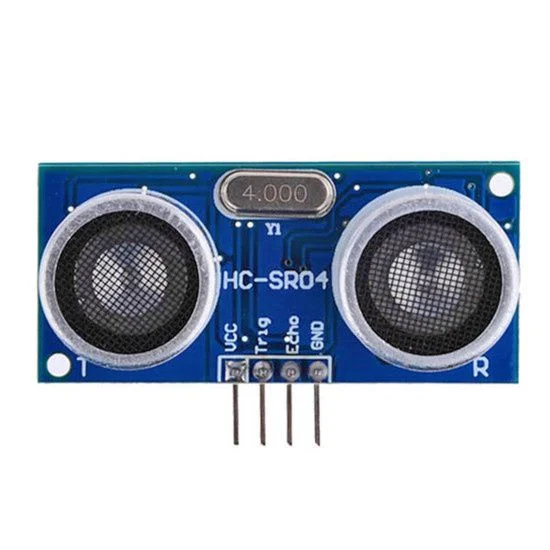

O Problema que Resolvemos
Enchentes e inundações são desastres naturais que causam perdas incalculáveis, tanto materiais quanto humanas. A falta de um sistema de alerta precoce eficaz deixa comunidades vulneráveis, resultando em destruição de propriedades, deslocamento de famílias e, em casos extremos, perda de vidas. A imprevisibilidade e a rapidez com que os rios podem transbordar exigem uma solução proativa e em tempo real.

Tecnologias Utilizadas
Microcontrolador arduino
O coração do nosso dispositivo, o Arduino, oferece flexibilidade e robustez para o processamento de dados e controle do sistema.
Sensor Ultrassônico
Utilizamos um sensor ultrassônico de alta precisão para medir o nível da água de rios e córregos de forma contínua e confiável.
Sistema de Alerta Visual e Sonoro
LEDs indicam os níveis (verde, amarelo, vermelho) e uma sirene é acionada em níveis críticos para alerta imediato..
Nossos objetivos
Reduzir Impactos Negativos
Minimizar os danos materiais e humanos causados por enchentes, protegendo bens e, principalmente, vidas.
Alertas Precoces e Eficazes
Fornecer informações em tempo real sobre o nível da água, permitindo que as comunidades ajam preventivamente.
Empoderar Comunidades
Capacitar moradores e autoridades locais com ferramentas para uma resposta rápida e coordenada a situações de risco.
Público-Alvo Impactado
- Comunidades em Áreas de Risco:Moradores de regiões historicamente afetadas por inundações.
- Defesa Civil e Órgãos Governamentais:Responsáveis pela gestão de desastres e segurança pública.
- Prefeituras e Municípios:Buscando soluções para a proteção de seus cidadãos e infraestrutura.
- Empresas e Indústrias:Localizadas em áreas suscetíveis a enchentes, visando proteger seus ativos.
Benefícios da Solução
Segurança Aprimorada
Alertas em tempo real permitem evacuações seguras e reduzem o risco de ferimentos ou perdas de vida.
Redução de Danos Materiais
Ação preventiva pode salvar bens, documentos e propriedades da destruição causada pela água.
Tomada de Decisão Rápida
Autoridades podem mobilizar recursos e equipes de resgate com maior agilidade e eficiência.
Paz de Espírito
Saber que há um sistema de monitoramento ativo traz tranquilidade para as comunidades em risco.
Sustentabilidade Local
Contribui para a resiliência das cidades e a adaptação às mudanças climáticas.
Custo-Benefício
Investimento em prevenção é sempre mais econômico do que a recuperação pós-desastre.